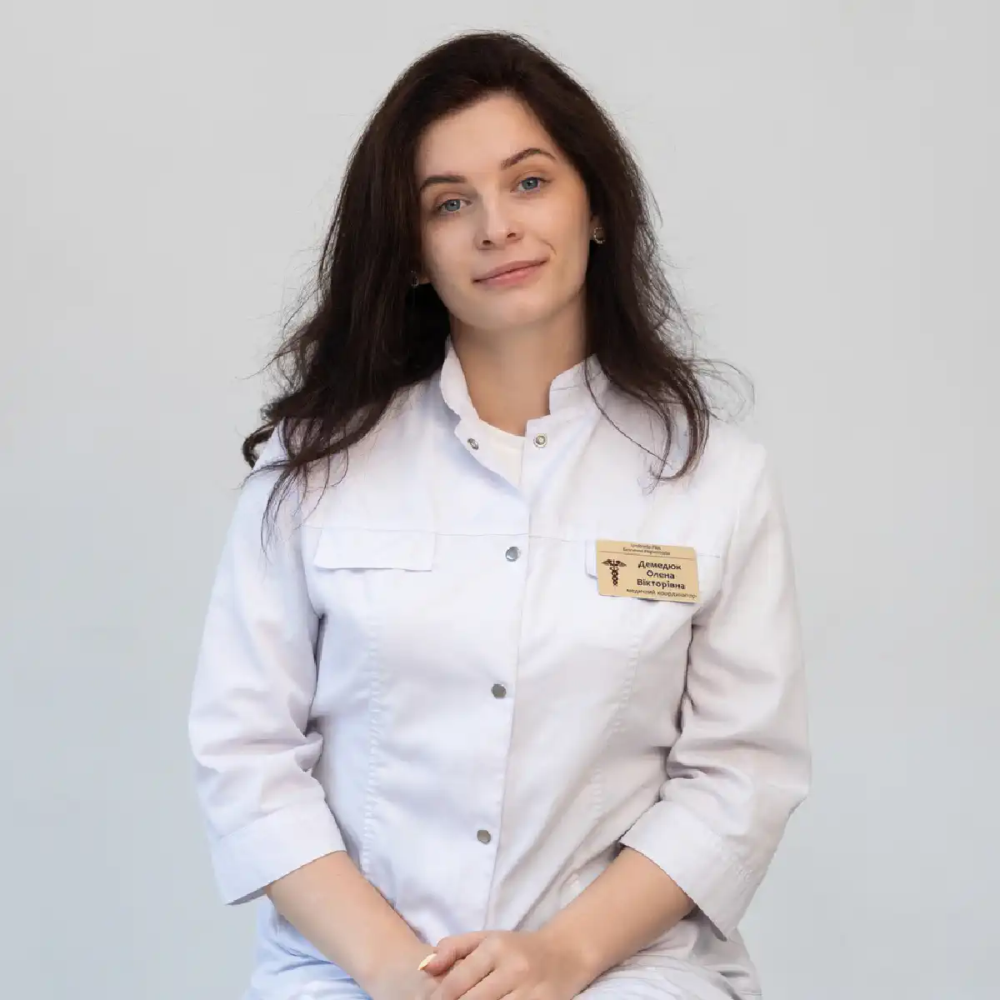

+38(068) 79 72 782
+38(068) 79 72 782Лікування пивного алкоголізму Дніпро
Зроби перший крок до здорового та тверезого життя


Безкоштовна консультація, працюємо цілодобово 24/7
Зроби перший крок до здорового та тверезого життя
Пивний алкоголізм тривалий час сприймається як «легка» та соціально допустима форма залежності. Однак регулярне вживання пива призводить до формування стійкої алкогольної тяги, тяжких порушень обміну речовин і гормонального фону, а також ураження внутрішніх органів. Лікування пивного алкоголізму в Дніпрі потребує професійного медичного підходу, що включає детоксикацію, стабілізацію стану та роботу з психологічною залежністю. На відміну від міцного алкоголю, пиво часто вживається щодня, у великих об’ємах і без виражених епізодів запою. Це створює ілюзію контролю та «безпеки», через що залежність формується поступово і залишається непоміченою протягом місяців і навіть років. Організм звикає до постійного надходження етанолу, порушується робота нервової системи, знижується здатність до саморегуляції, а відмова від пива починає супроводжуватися дратівливістю, тривогою, порушенням сну та зниженням працездатності.
Особливу небезпеку пивний алкоголізм становить через виражений вплив на гормональну систему. У чоловіків може знижуватися рівень тестостерону, формуватися ендокринні порушення та зміни зовнішності, у жінок — збої менструального циклу, погіршення емоційного стану та прискорений розвиток залежності. Додатково страждають печінка, серце, судини, підшлункова залоза, зростає ризик ожиріння та метаболічного синдрому. Без своєчасного лікування пивна залежність нерідко переходить у більш тяжкі форми алкоголізму, що супроводжуються запоями, втратою контролю над кількістю випитого та вираженими соматичними ускладненнями. Саме тому важливо розпочинати лікування на ранній стадії, не чекаючи тяжких наслідків для здоров’я та соціального життя. Комплексне лікування пивного алкоголізму спрямоване не лише на очищення організму від токсинів, а й на відновлення нормальної роботи внутрішніх органів, зниження патологічної тяги до алкоголю та формування стійкої мотивації до тверезого способу життя. Індивідуальний підбір методів терапії дозволяє врахувати стаж уживання, загальний стан здоров’я та психологічні особливості пацієнта, що значно підвищує ефективність лікування і знижує ризик рецидивів.
Пивний алкоголізм — це форма хронічної алкогольної залежності, за якої основним уживаним напоєм є пиво. Незважаючи на відносно невисоку міцність, пиво містить етанол, який при регулярному вживанні спричиняє такі самі біохімічні зміни в мозку, як і міцний алкоголь. Поступово формується толерантність, людині потрібен дедалі більший об’єм напою для досягнення звичного ефекту розслаблення, а здатність контролювати вживання знижується. Небезпека пивного алкоголізму полягає у комплексному та прихованому впливі на організм. Щоденне або майже щоденне вживання пива створює постійне токсичне навантаження на печінку та серцево-судинну систему навіть за відсутності виражених запоїв. Печінка змушена безперервно переробляти етанол і продукти його розпаду, що з часом призводить до функціональних збоїв і структурних змін тканин.
На тлі пивної залежності нерідко розвиваються жировий гепатоз, артеріальна гіпертонія, алкогольна кардіоміопатія та порушення серцевого ритму. Погіршується стан судин, підвищується ризик інфарктів і інсультів, знижується загальна витривалість і толерантність до фізичних навантажень. Додатковим фактором ризику є висока калорійність пива, що сприяє набору ваги та розвитку метаболічних порушень. Важливу роль відіграє і порушення гормонального балансу. У чоловіків пивний алкоголізм може призводити до зниження рівня тестостерону та змін обміну статевих гормонів, у жінок — до збоїв менструального циклу, емоційної нестабільності та прискореного прогресування залежності. Ці зміни нерідко посилюють психологічну тягу до алкоголю та ускладнюють самостійну відмову від пива.
Формування стійкої психологічної залежності проявляється тим, що пиво починає сприйматися як основний спосіб розслаблення, зняття стресу або покращення настрою. Без професійного лікування така залежність прогресує, зачіпаючи не лише фізичне здоров’я, а й психоемоційний стан, соціальні зв’язки та якість життя загалом.
Залежність від пива формується поступово і на перших етапах часто залишається непоміченою як самою людиною, так і її оточенням. Пиво рідко асоціюється з тяжким алкоголізмом, тому вживання сприймається як частина повсякденного життя і не викликає настороженості. Людина може не вважати проблему серйозною, оскільки пиво сприймається як «нешкідливий» напій, відсутні виражені запої на ранніх стадіях, а саме вживання нерідко виправдовується стресом, втомою після роботи, відпочинком або усталеною звичкою. На цьому етапі формується психологічна прив’язаність: пиво починає використовуватися як універсальний спосіб розслаблення, покращення настрою або зняття напруження. Поступово закріплюється ритуал уживання — увечері, у вихідні, «для сну» або «для відпочинку», що створює ілюзію контролю над ситуацією. Однак саме така регулярність є ключовим фактором розвитку залежності.
З часом збільшується частота та об’єм уживання. Організм адаптується до постійного надходження етанолу, розвивається толерантність, і попередня кількість пива перестає давати очікуваний ефект. У спробі його посилити людина починає пити частіше або більше, не завжди усвідомлюючи зміни, що відбуваються. Відмова від пива на цьому етапі вже починає супроводжуватися дратівливістю, тривогою, внутрішнім напруженням, порушенням сну та погіршенням загального самопочуття. Можуть з’являтися головні болі, зниження концентрації, втома та емоційна нестабільність. Ці симптоми сприймаються як «поганий настрій» або наслідки стресу, що ще більше ускладнює усвідомлення залежності та відкладає звернення по професійну допомогу.
До основних симптомів пивного алкоголізму належать щоденне або майже щоденне вживання пива, яке з часом перестає сприйматися як відхилення від норми. Людина може планувати день з урахуванням можливості випити, відчувати внутрішній дискомфорт за відсутності пива та шукати приводи для вживання навіть без об’єктивних причин. Однією з ключових ознак залежності є втрата контролю над кількістю випитого — запланована «одна пляшка» нерідко перетворюється на кілька, при цьому відчуття міри поступово втрачається.
Характерним симптомом стає дратівливість і тривога за відсутності алкоголю. Без звичного напою людина відчуває внутрішнє напруження, неспокій, може ставати запальною або апатичною. Ці стани нерідко помилково пов’язуються зі стресом або втомою, хоча насправді вони є проявами формування абстинентного синдрому в легкій або прихованій формі. На тлі регулярного вживання пива знижується працездатність і концентрація уваги, погіршується пам’ять, з’являється відчуття постійної втоми. Навіть після сну людина може почуватися розбитою, важко включатися в робочий процес і відчувати потребу в алкоголі як способі «перезавантаження». Поступово страждає професійна ефективність і якість повсякденного життя.
Фізичні прояви пивного алкоголізму включають набряклість, збільшення маси тіла, появу задишки та зниження толерантності до фізичних навантажень. Ці зміни пов’язані з порушенням водно-сольового балансу, гормональними збоями та негативним впливом етанолу на серцево-судинну систему. Додатково часто спостерігаються порушення сну — труднощі із засинанням, поверхневий сон, ранні пробудження — і хронічна втома, яка не минає навіть після відпочинку. Сукупність цих ознак свідчить про розвиток алкогольної залежності та необхідність звернення до нарколога. Своєчасна консультація спеціаліста дозволяє об’єктивно оцінити стан, запобігти подальшому прогресуванню захворювання та підібрати ефективне лікування на ранній стадії.
Хоча пивний алкоголізм часто перебігає без класичних запоїв, при тривалому безперервному вживанні пива може формуватися стан хронічної алкогольної інтоксикації, який за своєю тяжкістю потребує медичного виведення із запою. Постійне надходження етанолу призводить до виражених порушень роботи нервової та серцево-судинної систем, виснаження адаптаційних механізмів і різкого погіршення загального самопочуття. Самостійна відмова від алкоголю в таких випадках може бути небезпечною. Різке припинення вживання нерідко супроводжується стрибками артеріального тиску, тахікардією, тремором, підвищеною пітливістю, вираженою тривогою та порушенням сну. У частини пацієнтів можливі судомні реакції, панічні стани та загострення хронічних захворювань, що створює пряму загрозу для здоров’я і потребує медичного контролю.
Професійне виведення із запою дозволяє безпечно стабілізувати стан пацієнта та знизити ризики ускладнень. У межах медичної допомоги проводиться детоксикація організму, корекція водно-електролітного балансу, підтримка роботи серця і нервової системи, а також купірування тривожних і вегетативних симптомів. Застосування медикаментів здійснюється з урахуванням загального стану, стажу вживання та супутніх захворювань. Після стабілізації самопочуття важливо розглядати виведення із запою не як самостійне вирішення проблеми, а як перший етап лікування пивного алкоголізму. Без подальшої роботи з психологічною залежністю та причинами вживання ризик повернення до пива залишається високим, тому комплексний підхід значно підвищує шанси на стійке відновлення.
Детоксикація — ключовий етап лікування пивної залежності, спрямований на безпечне очищення організму від продуктів розпаду етанолу та стабілізацію загального стану. При регулярному вживанні пива токсичне навантаження на внутрішні органи накопичується поступово, тому навіть за відсутності виражених запоїв організм може перебувати у стані хронічної інтоксикації. За таких умов порушуються обмінні процеси, страждає робота печінки, серцево-судинної та нервової систем, а загальне самопочуття погіршується з дня на день. Саме тому медична детоксикація відіграє принципову роль на початку лікування. У подібних випадках крапельниця від алкоголю є найбільш ефективним і контрольованим способом надання допомоги, що дозволяє швидко та безпечно знизити рівень інтоксикації.
Інфузійна терапія допомагає прискорити виведення токсинів і продуктів розпаду етанолу, зменшити їх негативний вплив на печінку, нирки та головний мозок. За рахунок введення спеціально підібраних розчинів відновлюється водно-електролітний баланс, який часто порушений при пивному алкоголізмі та проявляється набряками, загальною слабкістю, головними болями, сухістю в роті та порушеннями серцевого ритму. Корекція цих порушень особливо важлива для стабілізації артеріального тиску, покращення мікроциркуляції та нормалізації роботи серцево-судинної системи.
Крапельниця також чинить підтримувальну дію на життєво важливі органи та системи. У ході детоксикації покращується функція печінки, активізуються процеси відновлення клітин, знижується навантаження на серце і судини, стабілізується робота нервової системи. Поступово зменшуються симптоми інтоксикації та абстиненції — тривожність, внутрішнє напруження, тремор, дратівливість, пітливість, прискорене серцебиття, порушення сну та виражене відчуття розбитості. Багато пацієнтів відзначають помітне полегшення вже в перші години після початку терапії, з’являється ясність мислення, знижується емоційна нестабільність і покращується загальне самопочуття.
Склад інфузійної терапії підбирається індивідуально з урахуванням віку пацієнта, тривалості та регулярності вживання пива, вираженості клінічних симптомів, наявності хронічних захворювань і загального стану організму. Такий персоналізований підхід дозволяє не лише підвищити ефективність детоксикації, а й мінімізувати ризик побічних реакцій і ускладнень. Медичний контроль на цьому етапі особливо важливий, оскільки він забезпечує безпеку лікування та своєчасну корекцію терапії за потреби. Детоксикація є лише першим етапом лікування пивної залежності. Вона усуває фізичні прояви інтоксикації та створює сприятливу основу для подальшої роботи з психологічною тягою до алкоголю, зміною звичок і формуванням стійкої мотивації до тверезого способу життя. Без наступних етапів комплексного лікування ризик повернення до вживання пива залишається високим, тому детоксикацію слід розглядати як початок системної та послідовної терапії.
Регулярне вживання пива чинить виражений вплив на гормональну систему і з часом призводить до ендокринних порушень, які безпосередньо відображаються на фізичному та психоемоційному стані людини. Незважаючи на поширену думку про «м’якість» пива, етанол і супутні речовини, що містяться в ньому, втручаються у тонку регуляцію гормонального фону, порушуючи природні механізми обміну та відновлення організму. У чоловіків при пивному алкоголізмі нерідко знижується рівень тестостерону. Це призводить до набору жирової маси, зменшення м’язової сили та витривалості, зниження лібідо і погіршення загального тонусу. На тлі гормонального дисбалансу можуть з’являтися зміни зовнішності, хронічна втома, дратівливість і зниження мотивації. Додатково порушується обмін речовин, що ще більше закріплює негативні зміни та погіршує якість життя.
У жінок регулярне вживання пива сприяє порушенню балансу естрогенів і прогестерону. Це може проявлятися збоями менструального циклу, передменструальними розладами, перепадами настрою, погіршенням сну та загального самопочуття. Гормональні коливання нерідко посилюють емоційну нестабільність і тривожність, що підвищує ризик формування глибшої психологічної залежності від алкоголю. Такі ендокринні зміни не лише посилюють залежність, а й суттєво ускладнюють лікування без медичної допомоги. Порушений гормональний фон знижує здатність організму до самовідновлення, підвищує ризик рецидивів і робить відмову від алкоголю більш тяжкою як фізично, так і психологічно. Саме тому при пивному алкоголізмі важливе комплексне лікування за участю медичних спеціалістів, спрямоване не лише на детоксикацію, а й на поступову нормалізацію гормонального балансу та загального стану організму.
Вартість лікування пивного алкоголізму в Дніпрі починається від 2199 грн.
| Популярні послуги | Ціна |
|---|---|
| Нарколог Дніпро | Від 2199 грн |
| Крапельниця від алкоголю | Від 2199 грн |
| Виведення із запою вдома | Від 2199 грн |
| Кодування від алкоголізму | Від 6000 грн |
Пивний алкоголізм по-різному впливає на організм чоловіків і жінок, що пов’язано з особливостями гормонального фону, обміну речовин і роботи нервової системи. У чоловіків на тлі регулярного вживання пива частіше розвиваються серцево-судинні захворювання, артеріальна гіпертонія та порушення серцевого ритму. Одночасно виникають гормональні збої, зниження рівня тестостерону, що призводить до зменшення потенції, зниження фізичної витривалості, набору ваги та погіршення загального самопочуття. Ці зміни нерідко супроводжуються дратівливістю, апатією та зниженням мотивації, що додатково закріплює залежність.
У жінок пивний алкоголізм, як правило, прогресує швидше. Залежність формується за коротший термін, при цьому в першу чергу страждає нервова система. Часто відзначаються підвищена тривожність, емоційна нестабільність, порушення сну та концентрації уваги. Суттєво зростає ризик депресивних станів і ендокринних порушень, включно зі збоями менструального циклу та погіршенням загального гормонального балансу. Ці фактори роблять перебіг пивного алкоголізму у жінок більш тяжким і потребують особливо уважного медичного підходу. В обох випадках пивна залежність поступово зачіпає всі сфери життя — здоров’я, працездатність, стосунки з близькими та емоційний стан. Постійна інтоксикація і психологічна прив’язаність до алкоголю призводять до зниження якості життя та втрати контролю над ситуацією, що робить своєчасне лікування необхідною умовою відновлення.
Основна відмінність пивного алкоголізму полягає в його прихованому та поступовому перебігу. Відсутність міцного алкоголю створює ілюзію безпеки та контрольованості, через що проблема тривалий час залишається недооціненою. Людина може не вважати свій стан залежністю, оскільки не стикається з вираженими запоями або тяжким похміллям на ранніх етапах. Крім того, пиво часто вживається у великих об’ємах і на регулярній основі, що значно посилює токсичний вплив на організм. Постійне надходження етанолу призводить до хронічної інтоксикації, порушень обміну речовин і формування стійкої психологічної тяги. Саме поєднання доступності, соціальної прийнятності та великих об’ємів уживання робить пивний алкоголізм не менш небезпечним, ніж інші форми алкогольної залежності, і потребує професійного, комплексного лікування.
Навіть за відсутності класичних запоїв пивна залежність залишається серйозною та прогресуючою проблемою. Щоденне або майже щоденне вживання пива підтримує постійний рівень етанолу в крові, через що організм не встигає повністю відновитися. Формується стан хронічної інтоксикації, за якого внутрішні органи та нервова система працюють в умовах постійного токсичного навантаження, а зовнішні прояви захворювання можуть тривалий час залишатися згладженими. За такої форми алкоголізму поступово розвивається стійка психологічна тяга. Пиво починає сприйматися як необхідний елемент повсякденного життя — спосіб розслаблення, зняття напруження, покращення настрою або «нормального» засинання. Відсутність напою викликає внутрішній дискомфорт, дратівливість і тривогу, що ще більше закріплює залежність і ускладнює самостійну відмову від алкоголю.
Небезпека пивної залежності без запоїв полягає в тому, що вона часто залишається без лікування до появи виражених ускладнень. На тлі хронічної інтоксикації погіршується робота печінки, серця і судин, порушується гормональний баланс, знижується працездатність і якість сну. Людина може тривалий час не пов’язувати погіршення самопочуття з уживанням пива, що відкладає звернення по медичну допомогу. Своєчасне виявлення та лікування пивного алкоголізму на цьому етапі дозволяє уникнути тяжких наслідків і переходу залежності у більш агресивні форми. Професійний медичний підхід допомагає не лише знизити токсичне навантаження на організм, а й опрацювати психологічні механізми залежності, що суттєво підвищує шанси на стійке відновлення та збереження якості життя.
У процесі лікування пивного алкоголізму роль близьких має вирішальне значення. Важливо розуміти, що залежність — це захворювання, а не прояв слабкості характеру, тому тиск, звинувачення та ультиматуми, як правило, дають зворотний ефект. Агресивний тон і постійна критика посилюють опір, викликають почуття провини та можуть ще більше закріплювати тягу до алкоголю.
Набагато ефективніше спокійно й шанобливо окреслити проблему, звертаючи увагу на реальні зміни у стані здоров’я, поведінці та якості життя. Важливо говорити про наслідки залежності без залякування, спираючись на факти та власні переживання, а не на звинувачення. Такий підхід допомагає людині замислитися над ситуацією і знижує рівень психологічного захисту. Наступним кроком є пропозиція професійної допомоги. Йдеться про консультацію нарколога, детоксикацію, психологічну підтримку або комплексне лікування. Важливо підкреслити, що звернення до спеціаліста — це не покарання, а можливість безпечно та ефективно впоратися з проблемою, зберегти здоров’я і відновити контроль над життям.
У низці випадків доцільно звернутися за консультацією до нарколога самостійно, навіть якщо людина із залежністю поки що заперечує проблему. Це дозволяє близьким отримати рекомендації щодо правильної тактики спілкування, зрозуміти стадії захворювання та уникнути помилок, які можуть ненавмисно підтримувати залежність. Підтримка сім’ї значно підвищує ефективність лікування пивного алкоголізму. Спільна участь у процесі відновлення, емоційна стабільність і готовність до діалогу створюють сприятливі умови для мотивації пацієнта та зниження ризику рецидивів у майбутньому.
UmbrellaPlus у Дніпрі пропонує професійне, комплексне та повністю анонімне лікування пивного алкоголізму. Наша команда працює з пацієнтами на різних стадіях залежності, враховуючи особливості перебігу пивного алкоголізму, загальний стан здоров’я та індивідуальні потреби кожної людини. Основний акцент робиться на безпеку, медичну обґрунтованість і стійкий результат лікування. У роботі застосовуються сучасні методи детоксикації, спрямовані на очищення організму від продуктів розпаду етанолу та стабілізацію фізичного стану. Медикаментозна підтримка підбирається індивідуально і допомагає знизити патологічну тягу до алкоголю, нормалізувати сон, емоційний фон і роботу внутрішніх органів. Важливою частиною терапії є психотерапія, яка дозволяє розібратися в причинах залежності, змінити звичні поведінкові сценарії та сформувати мотивацію до тверезого способу життя.
Лікування в UmbrellaPlus вибудовується поетапно — від зняття інтоксикації та відновлення організму до психологічної підтримки та профілактики рецидивів. Такий підхід допомагає не просто тимчасово відмовитися від пива, а досягти стійких змін і повернути контроль над власним життям. Ми гарантуємо конфіденційність, уважне ставлення та професійний супровід на кожному етапі лікування. Звернення до спеціалістів — це перший і найважливіший крок до тверезого та повноцінного життя. Своєчасна допомога дозволяє уникнути тяжких ускладнень, зберегти здоров’я, відновити працездатність і повернутися до активного, усвідомленого життя без залежності.
Телефон для консультації та запису: +38(050-021-69-57)
Так, ми суворо дотримуємося повної конфіденційності на всіх етапах лікування. Інформація про пацієнта, діагноз та проходження терапії не передається третім особам. Звернення до нас не тягне за собою постановку на облік. Ви можете бути впевнені у безпеці та анонімності.
Програма лікування розробляється індивідуально після консультації з фахівцем. Враховуються вид залежності, її тривалість, фізичний та психологічний стан пацієнта. Такий підхід дозволяє підвищити ефективність терапії та знизити ризик зриву. Ми не використовуємо шаблонні рішення.
Так, ми супроводжуємо пацієнтів і після основного курсу лікування. Проводяться консультації, рекомендації щодо адаптації та профілактики рецидивів. За потреби можлива подальша психологічна підтримка. Це допомагає зберегти результат та повернутися до повноцінного життя.
Анонимно

Ну в хлопців просто золоті руки й світла голова, мене капали Олексій та Владислав, буквально за декілька сеансів я наче заново народився, до цього пив більше 3х тижнів, не міг зупинитись, дуже радий що знайшов саме цих спеціалістів, всім рекомендую
Анонимно
В течение нескольких лет я злоупотреблял алкоголь, что привело к увольнению с работы и вызвало у меня мысли о суициде. Понимая, что такой образ жизни неприемлем, я обратился за помощью в клинику “Амбрела”. Здесь я смог преодолеть свою зависимость от спиртного благодаря заботливым и опытным врачам, а также эффективной системе лечения. Спустя более года я полностью избавился от желания употреблять алкоголь, и теперь моя жизнь вернулась в норму. Я даже не приближаюсь к спиртному! Благодарю врачей клиники “Амбрела” за их помощь и заботу.
Анонимно
Я обращался за помощью в различные клиники, пытаясь избавиться от своей зависимости от алкоголя, но без особых успехов. Никак не мог справиться с желанием прибегнуть к бутылке, пока друг не посоветовал мне обратиться в центр “Амбрелла”. Я записался на прием и был поражен заботливым отношением к пациентам. Уже прошло два года, и теперь я смотрю на алкоголь с абсолютной равнодушием, активно занимаюсь спортом и улучшил отношения в семье. Благодаря центру “Амбрелла” моя жизнь была спасена от алкогольной зависимости!
Анонимно
Хочу выразить свою благодарность врачам из центра алкоголизма “Амбрела” за то, что они буквально спасли мою жизнь. В течение последнего года я сильно увлекался питьем, и все это привело к катастрофическим последствиям. Хотя я ходил на терапевтические сеансы, но безрезультатно. Тогда я нашел адрес клиники “Амбрела” в интернете, изучил отзывы и информацию о центре, и записался на прием. Там мне сразу предложили методику лечения, которая помогла не только справиться с физической ломкой, но и психической зависимостью от алкоголя. Не буду распространяться, скажу только одно - после пребывания в этой клинике я стал другим человеком, и навсегда забыл, что такое привкус алкоголя. Больше меня не тянет на это! Я искренне верю, что в центре “Амбрела” трудятся настоящие целители душ!
Анонимно
После сложного развода мой сын начал подавлять свою обиду и горе употреблением алкоголя. Он старался скрывать это от меня, но я, как мать, почувствовала, что что-то не так. В конечном итоге, ситуация стала критической. Моя знакомая посоветовала мне обратиться в клинику “Амбрела”. Я была приятно удивлена их работой! Они помогли сыну преодолеть очередной период злоупотребления алкоголем, и с тех пор прошел уже более года, и он совсем не пьет.
Анонимно
Благодаря вашей помощи, моя семья была спасена. Я с трудом уговорила мужа начать лечение, и последний каплей был пьяное ДТП. К счастью, в аварии никто не пострадал, но это был для него сигнал к действию. Он наконец согласился пройти курс лечения на дому, в стационар не хотел ложиться. Лечение было трудным, и были моменты, когда срыв был настолько близок, но благодаря вашему центру Амбрелла мы справились с этим.
Анонимно
Для меня эта клиника стала настоящим спасением! Долгое время я упорно отказывался от лечения, уверен был, что со мной все в порядке. Но к счастью, семья уговорила меня попробовать. И сегодня я чувствую себя невероятно счастливым, осознавая, что мне абсолютно не нужен алкоголь. Огромное спасибо за помощь и поддержку, которые я получил здесь! Я благодарен вам за новую возможность жить полноценной и счастливой жизнью!
Анонимно
Выражаю благодарность ребятам, которые оказали мне помощь и не отвернулись. Уже 10 месяцев я остаюсь чистой. Благодарю за то, что помогли найти новый путь в моей жизни.
Номер телефону:
+380 (68) 797 27 82
+380 (50) 021 69 57
Адресу наркологічного центра вашого міста уточнюйте за
телефоном
Працюємо: Київ, Одеса, Львів, Харків, Дніпро, Запоріжжя,
Черкасах, Чугуєві, Чорноморську, Кам'янському
Telegram: t.me/umbrellaplus
Графік работы: Цілодобово